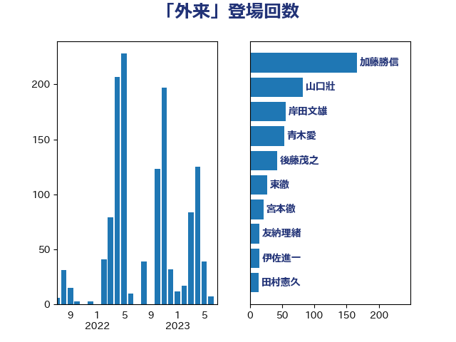

単語「外来」

| 加藤勝信 | 自由民主党 | 166 回 |
| 山口壯 | 自由民主党 | 82 回 |
| 岸田文雄 | 自由民主党 | 56 回 |
| 青木愛 | 立憲民主党 | 53 回 |
| 後藤茂之 | 自由民主党 | 43 回 |
| 東徹 | 日本維新の会 | 27 回 |
| 宮本徹 | 日本共産党 | 21 回 |
| 友納理緒 | 自由民主党 | 15 回 |
| 伊佐進一 | 公明党 | 15 回 |
| 田村憲久 | 自由民主党 | 14 回 |
| 平山佐知子 | 無所属 | 14 回 |
| 山下芳生 | 日本共産党 | 14 回 |
| 中島克仁 | 立憲民主党 | 14 回 |
| 窪田哲也 | 公明党 | 13 回 |
| 早稲田ゆき | 立憲民主党 | 13 回 |
| 仁木博文 | 無所属 | 12 回 |
| 近藤昭一 | 立憲民主党 | 11 回 |
| 新垣邦男 | 立憲民主党 | 11 回 |
| 吉田統彦 | 立憲民主党 | 11 回 |
| 倉林明子 | 日本共産党 | 11 回 |
| 遠藤良太 | 日本維新の会 | 10 回 |
| 穀田恵二 | 日本共産党 | 10 回 |
| 徳永エリ | 立憲民主党 | 10 回 |
| 塩川鉄也 | 日本共産党 | 10 回 |
| 古川俊治 | 自由民主党 | 10 回 |
| 中川康洋 | 公明党 | 10 回 |
| 阿部知子 | 立憲民主党 | 9 回 |
| 角田秀穂 | 公明党 | 9 回 |
| 西村明宏 | 自由民主党 | 9 回 |
| 宮崎勝 | 公明党 | 9 回 |
| 井上哲士 | 日本共産党 | 9 回 |
| 西村康稔 | 自由民主党 | 8 回 |
| 自見はなこ | 自由民主党 | 8 回 |
| 源馬謙太郎 | 立憲民主党 | 8 回 |
| 本田顕子 | 自由民主党 | 8 回 |
| 川田龍平 | 立憲民主党 | 8 回 |
| 山際大志郎 | 自由民主党 | 8 回 |
| 大岡敏孝 | 自由民主党 | 8 回 |
| 関芳弘 | 自由民主党 | 7 回 |
| 田村まみ | 国民民主党 | 7 回 |
| 寺田静 | 無所属 | 7 回 |
| 佐藤英道 | 公明党 | 7 回 |
| 神谷政幸 | 自由民主党 | 6 回 |
| 池下卓 | 日本維新の会 | 6 回 |
| 斎藤アレックス | 国民民主党 | 6 回 |
| 吉良よし子 | 日本共産党 | 6 回 |
| 吉田とも代 | 日本維新の会 | 6 回 |
| 高橋千鶴子 | 日本共産党 | 5 回 |
| 篠原孝 | 立憲民主党 | 5 回 |
| 塩田博昭 | 公明党 | 5 回 |
| 上野通子 | 自由民主党 | 5 回 |
| 辻清人 | 自由民主党 | 4 回 |
| 田中健 | 国民民主党 | 4 回 |
| 浜地雅一 | 公明党 | 4 回 |
| 打越さく良 | 立憲民主党 | 4 回 |
| 山井和則 | 立憲民主党 | 4 回 |
| 高木真理 | 立憲民主党 | 3 回 |
| 細田博之 | 自由民主党 | 3 回 |
| 福島みずほ | 社会民主党 | 3 回 |
| 石井正弘 | 自由民主党 | 3 回 |
| 田村智子 | 日本共産党 | 3 回 |
| 漆間譲司 | 日本維新の会 | 3 回 |
| 水野素子 | 立憲民主党 | 3 回 |
| 杉尾秀哉 | 立憲民主党 | 3 回 |
| 星北斗 | 自由民主党 | 3 回 |
| 島村大 | 自由民主党 | 3 回 |
| 山田美樹 | 自由民主党 | 3 回 |
| 古屋範子 | 公明党 | 3 回 |
| 阿部弘樹 | 日本維新の会 | 2 回 |
| 阿部司 | 日本維新の会 | 2 回 |
| 鈴木英敬 | 自由民主党 | 2 回 |
| 野間健 | 立憲民主党 | 2 回 |
| 芳賀道也 | 国民民主党 | 2 回 |
| 羽生田俊 | 自由民主党 | 2 回 |
| 竹内真二 | 公明党 | 2 回 |
| 福重隆浩 | 公明党 | 2 回 |
| 石田昌宏 | 自由民主党 | 2 回 |
| 石橋通宏 | 立憲民主党 | 2 回 |
| 石垣のりこ | 立憲民主党 | 2 回 |
| 石井啓一 | 公明党 | 2 回 |
| 田畑裕明 | 自由民主党 | 2 回 |
| 清水貴之 | 日本維新の会 | 2 回 |
| 池畑浩太朗 | 日本維新の会 | 2 回 |
| 比嘉奈津美 | 自由民主党 | 2 回 |
| 松野明美 | 日本維新の会 | 2 回 |
| 松本尚 | 自由民主党 | 2 回 |
| 新妻秀規 | 公明党 | 2 回 |
| 岸真紀子 | 立憲民主党 | 2 回 |
| 山本香苗 | 公明党 | 2 回 |
| 山本博司 | 公明党 | 2 回 |
| 山口那津男 | 公明党 | 2 回 |
| 小池晃 | 日本共産党 | 2 回 |
| 奥下剛光 | 日本維新の会 | 2 回 |
| 国光あやの | 自由民主党 | 2 回 |
| 務台俊介 | 自由民主党 | 2 回 |
| 一谷勇一郎 | 日本維新の会 | 2 回 |
| 高木かおり | 日本維新の会 | 1 回 |
| 馬場伸幸 | 日本維新の会 | 1 回 |
| 長友慎治 | 国民民主党 | 1 回 |
| 鈴木俊一 | 自由民主党 | 1 回 |
| 金子恭之 | 自由民主党 | 1 回 |
| 重徳和彦 | 立憲民主党 | 1 回 |
| 谷川とむ | 自由民主党 | 1 回 |
| 藤井一博 | 自由民主党 | 1 回 |
| 若松謙維 | 公明党 | 1 回 |
| 緑川貴士 | 立憲民主党 | 1 回 |
| 米山隆一 | 立憲民主党 | 1 回 |
| 竹谷とし子 | 公明党 | 1 回 |
| 稲富修二 | 立憲民主党 | 1 回 |
| 石井苗子 | 日本維新の会 | 1 回 |
| 田村貴昭 | 日本共産党 | 1 回 |
| 生稲晃子 | 自由民主党 | 1 回 |
| 武部新 | 自由民主党 | 1 回 |
| 櫛渕万里 | れいわ新選組 | 1 回 |
| 柚木道義 | 立憲民主党 | 1 回 |
| 松本剛明 | 自由民主党 | 1 回 |
| 志位和夫 | 日本共産党 | 1 回 |
| 後藤祐一 | 立憲民主党 | 1 回 |
| 山添拓 | 日本共産党 | 1 回 |
| 山東昭子 | 自由民主党 | 1 回 |
| 山岸一生 | 立憲民主党 | 1 回 |
| 小川淳也 | 立憲民主党 | 1 回 |
| 寺田学 | 立憲民主党 | 1 回 |
| 宮路拓馬 | 自由民主党 | 1 回 |
| 坂本祐之輔 | 立憲民主党 | 1 回 |
| 國重徹 | 公明党 | 1 回 |
| 吉田宣弘 | 公明党 | 1 回 |
| 吉川元 | 立憲民主党 | 1 回 |
| 伊波洋一 | 無所属 | 1 回 |
| 三浦信祐 | 公明党 | 1 回 |
| ながえ孝子 | 無所属 | 1 回 |